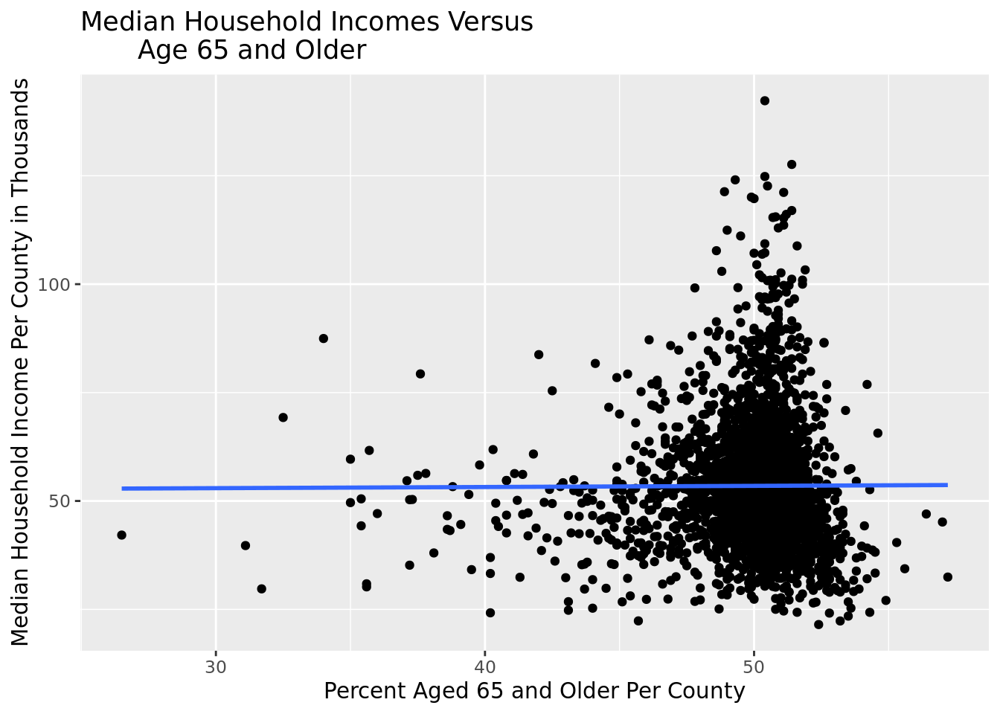

After accounting for state, which variable accounts for the most variability in median household income?
Report
Introduction
There are persistent problems and injustices in the United States surrounding income inequality. For our research project, we are going to examine the question: After accounting for state, which variable accounts for the most variability in median household income? In order to investigate this question, we will look at data coming from over 3,000 counties and all 50 states in the United States. In many cases, income levels and location (such as more vulnerable states and counties) are very interrelated for families in terms of accessing improved educational opportunities and resources, causing or exacerbating a vicious cycle that can be hard to break. In America, there are many root causes that contribute to such a cycle, and it is important they are clearly researched and evaluated, so changes can start to be made to states and therefore, populations that need them most. There are many factors that can influence one’s career outcomes, but some particularly important ones that we are going to focus on are education level, ethnicity, gender, and age. According to the APLU, people who hold college degrees are twice as likely to get a job and make around an extra $1.2 million over the course of their life (APLU). Black or Latino families make around 50% of what white households do, according to the Federal Reserve Board (Federal Reserve Board). The gender pay gap still persists, with women earning an average of 82% of what men do (PEW Research Center). Income can also vary with age, as people’s income typically peaks right before retirement (so around age 65). It is also important to note that on the state level, various factors such as funding per county and class disparities impact income inequality as well, which is something that we could observe beyond this project after identifying states that are particularly vulnerable. There are intersections in everyone’s identities and, thereby the states’ identities as well, and when combined, can have even greater impacts on career outcomes, so knowing which specific identities are most vulnerable is also a key step to making actionable change. We believe states with residents with higher levels of education, a higher white population, and more males will have high median household incomes. Since this data has been gathered by the US Census Bureau, a government organization, there should be no ethical concerns. They adhere to strict privacy policy guidelines to ensure a confidential, respectful, and transparent experience for participants when collecting data (United States Census Bureau).
https://www.census.gov/about/policies/privacy/data_stewardship/our_privacy_principles.html
Data
The dataset we are analyzing is from The Collection of Really Great, Interesting, Situated Datasets (CORGIS) Project. The data was collected from 2010 to 2019 by the United States Census Bureau. It should be noted that some of the estimates came from sample data. The dataset includes a wide variety of observations for various counties in the United States. In order to best serve our research question, we will focus on the statistics such as education level, ethnicity, age, and gender as well as respective state and median household income. The data is largely qualitative and in terms of what percentage of the county fits a certain description such as being a high school graduate or white, although there are some quantitative variables such as state and county.
Methodology
We began by loading in the necessary libraries and obtained the county demographic data.
Renaming Variables
We renamed our variables of interest because our dataset’s variables were too long. We focused on the variables of median household income (“income”), the percentage of the county that had a bachelor’s degree or higher (“education”), the percentage of the county that was female (“percent_female”), the percentage of the county that was 65 years and older (“age”), and the percentage of the county that was White and not Hispanic (“percentage_white”).
Graph of Income Versus State
To start our exploratory data analysis, we wanted to see how income varied across states. So, we made a heat map of the United States with different colors denoting different median household income levels.

We first summarized our data (finding median income) and manipulated it (using full_join) in order to create a Choropleth map of the US. Each state is colored based on median household income. We chose to create these maps as they helped us visualize general geographic patterns within the US based on the spectrum of colors by state. The states that are colored darker (such as purple and blue) have lower median household incomes, whereas those that are lighter colors (like yellow and green) are states that have higher median household incomes.
This visualization allows us to see that there are greater income disparities in the southeatern states, especially Mississippi, and that there is a generally higher median household income in the western and northeastern states, especially New Jersey.
Graphs of Income Versus Different Variables
Income vs. Education Level
The line of best fit of this scatter plot suggests a moderately strong, positive correlation between median education level per county and median household income per county in thousands.
Income vs. Percent Female

The line of best fit of this scatter plot suggests no correlation, or an extremely weak positive correlation, between female percentages per county and median household income per county in thousands.
Income vs. Age 65 and Older

The line of best fit of this scatter plot suggests no correlation, or an extremely weak positive correlation, between percent aged 65 and older per county and median household income per county in thousands.
Income vs. Percentage White
The line of best fit of this scatter plot suggests a very weak positive correlation between white percentage per county and median household income per county in thousands.
Given the results of these preliminary visuals, it seems as though education will be the variable that accounts for the most variability in median household income.
Models (Linear Regressions)
Baseline Model
Before we created any additive models, we first created a baseline model that only looked at median household income for all of the states. We created a linear regression because the response variable was numeric (median household income). The r-squared value for this model was 0.2923676, meaning that around 29% of the variability in median household income is due to the state.
parsnip model object
Call:
stats::lm(formula = income ~ State, data = data)
Coefficients:
(Intercept) StateAL StateAR StateAZ StateCA StateCO
68491.5 -24916.6 -26254.8 -19501.5 -777.9 -9696.7
StateCT StateDC StateDE StateFL StateGA StateHI
10709.9 17928.5 -2503.5 -17201.3 -21261.8 7937.1
StateIA StateID StateIL StateIN StateKS StateKY
-11231.9 -17569.8 -11835.2 -12624.9 -15626.8 -23609.3
StateLA StateMA StateMD StateME StateMI StateMN
-23617.5 9254.1 9050.1 -14922.7 -16683.1 -6835.0
StateMO StateMS StateMT StateNC StateND StateNE
-20395.4 -28878.4 -17507.5 -20072.0 -6016.1 -13796.5
StateNH StateNJ StateNM StateNV StateNY StateOH
816.7 14395.7 -24768.5 -8371.8 -6006.9 -12691.2
StateOK StateOR StatePA StateRI StateSC StateSD
-19780.8 -14538.4 -11435.4 7622.9 -22883.2 -13870.1
StateTN StateTX StateUT StateVA StateVT StateWA
-21324.5 -15643.9 -5431.9 -7734.7 -8731.7 -9098.0
StateWI StateWV StateWY
-10185.6 -23599.2 -6662.8 [1] 0.2923676Next, we created four different linear regression models that combined state with each variable to see which variable, when combined with state, resulted in the highest variability in median household income. We used r-squared values because each of these models only had 2 variables, so the number of variables would not have an effect on r-squared. We also used additive models instead of interaction models because if we used interaction models, there would be too many coefficients (because of each state). Therefore, for the purposes of clarity, we decided to use additive models. However, in future projects, we could look into interaction models.
Model with State and Education
[1] 0.6129233According to the r-squared value of 0.6129233, our additive model with state and education explains roughly 61% of the variability in median household income.
Model with State and Percent Female
[1] 0.2956188According to the r-squared value of 0.2956188, our additive model with state and the percentage of people who are female explains roughly 61% of the variability in median household income.
Model with State and Age 65 and Older
[1] 0.3746036According to the r-squared value of 0.3746036, our additive model with state and the percentage of people who are 65 years and older explains roughly 37% of the variability in median household income.
Model with State and Percentage White
[1] 0.2985728According to the r-squared value of 0.2985728, our additive model with state and the percentage of people who are White and not Hispanic or Latino explains roughly 30% of the variability in median household income.
Results
A higher r-squared value means that a greater percentage of the variability in the dependent variable can be explained by the independent variables. In this case, the dependent variable was median household income. Before creating any additive models, we created a baseline linear regression model that solely focused on the relationship between state and median household income. According to the r-squared value of 0.2923676, around 29% of the variability in median household income is due to the state. We then compared this r-squared value to r-squared values of the four additive models. The r-squared values for state and each of the independent variables for education, age, gender, and ethnicity, respectively, are 0.6129, 0.3746, 0.2956, and 0.2986. Therefore, as the r-squared value for education was the highest (increased the most from the baseline model), it is the best predictor of median household income (when coupled with state) among these four explanatory variables. Additionally, based on the graphs for each variable, education vs. income was also the only graph with a best-fit line with a positive slope.
After the state and education model, the next best model was the additive model with state and the percentage of people who are 65 years and older. The r-squared value was 0.3746, meaning the additive model explains roughly 37% of the variation in median household income. This was not much of an increase from the baseline model that only examined the state. This makes sense because from our exploratory data analysis, the graph of median household income versus percentage of people 65 years and older had a relatively weak and flat correlation.
The worst models was the additive model with state and the percentage of people who are White and the additive model with state and the percentage of people who are female. The r-squared value for the first model was 0.2985728, meaning this additive model explains roughly 30% of the variation in median household income. The r-squared value for the second model was 0.2956188, meaning this additive model explains roughly 30% of the variation in median household income. These r-squared values are also not much higher than the r-squared value of the baseline model, which makes sense because the graphs for these variables were relatively weak and flat. The coefficients for each state for the linear regression models represent the change in income for each state compared to the intercept, which is Alaska’s median household income. Excluding Washington D.C., the state with the highest income was New Jersey, with a coefficient of 14395.7, and the state with the lowest income was Mississippi, with a coefficient of -28878.4.
Discussion
The state of New Jersey had the third highest coefficient (1259.7) in the fitted model between income, state, and education, and Mississippi had the lowest coefficient (-23261.6527). Given that New Jersey was the highest median household income and Mississippi had the lowest, the results of the education model strongly support the conclusion that education is the variable that most accounts for variability in median household income across states. While we were able to make some preliminary observations about what general factors had the largest impact on median household income by state, there were some crucial limitations of our project. First, the only income variable that was in the dataset was median household income which could have limitations and does not take into account the extremes on either side of the income spectrum. If the dataset had the mean household incomes, this could have provided a clearer picture of income disparities within and between states. The dataset was also created in terms of percentages of people who fit into a single category which limited whether we could look at multiple categories at once. For example, when it came to age there were categories for under 5-years-old, under 18-years-old, and over 65-years-old. This was limiting as most people who are earning income are in between 18 to 65 years old. So, we thought that using the 65 and older category was most fitting, but it likely led to over-generalization of trends that occur.
There are several future steps our group could take to improve our analysis. In this project we focused on how the factors of ethnicity, gender, education level, and age, when added with state, impacted median household income on the state level, but since the dataset is also organized by counties we could further our analysis to the county level. Now knowing that a state such as Mississippi is more vulnerable in terms of lower median household income and lower education levels, we could focus our research on specific counties in Mississippi that have particularly low income and education levels in order to help them get on track on a path towards higher median household income and education levels. Moreover, making our explanatory variables more nuanced would allow us to get a better idea of how education levels, for example, impact median household income. To do this, rather than just splitting up education levels into Bachelor’s degree and no Bachelor’s degree we could separate education levels into no degree, high school degree, and Bachelor’s degree. Another explanatory variable that could be more nuanced is ethnicity as we separated ours into White and non-White. It is important to recognize that not all ethnic minorities have the same experiences so splitting this variable up could lead to more detailed findings. Unfortunately, the way our dataset was organized made it extremely confusing and difficult to separate the ethnic minorities accurately.
Lastly, we used additive models rather than interaction models. Interaction models could have given us a lens into how the independent variables interacted with each other and could have led to some different findings than the additive models did. Due to the inter-sectionality of one’s identity, we would guess that the independent variables are interconnected.